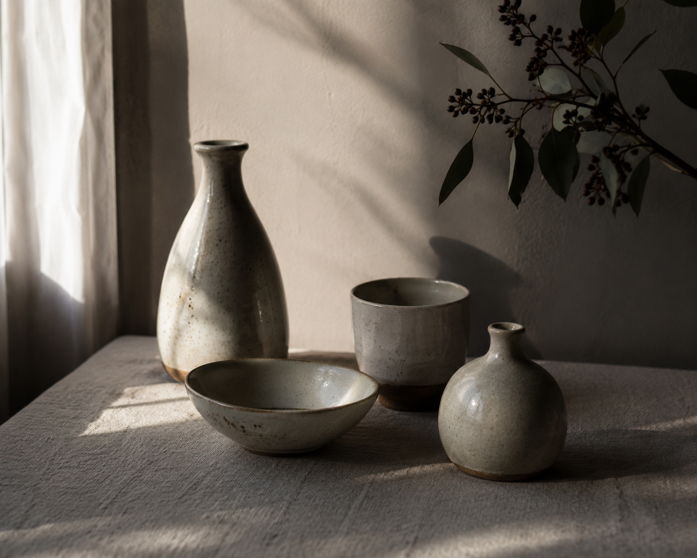
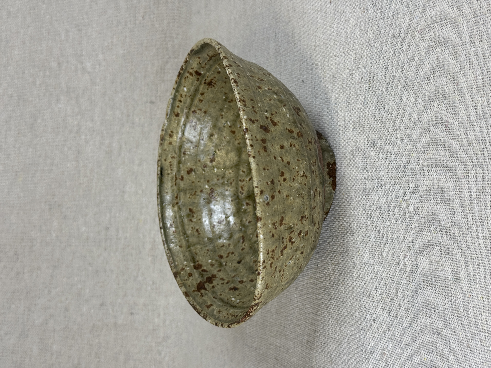
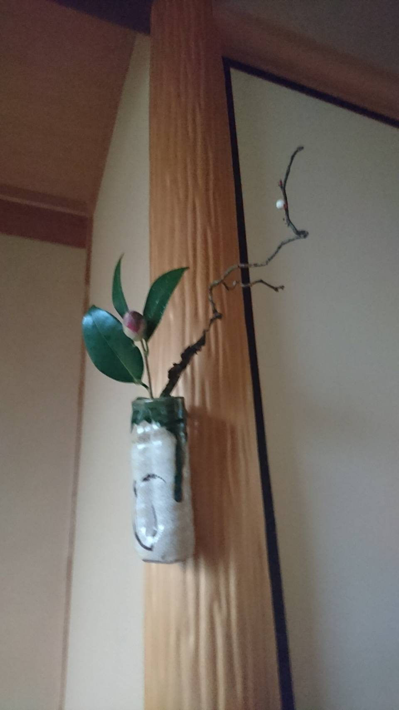
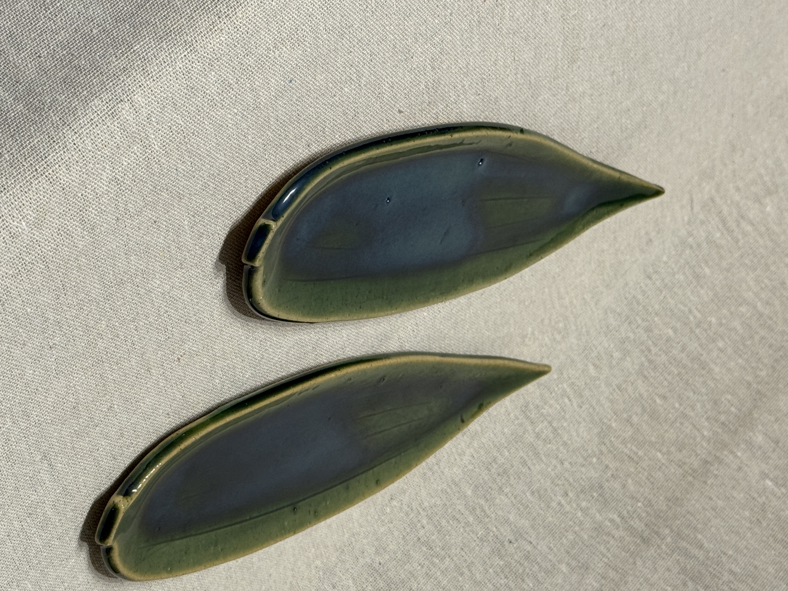
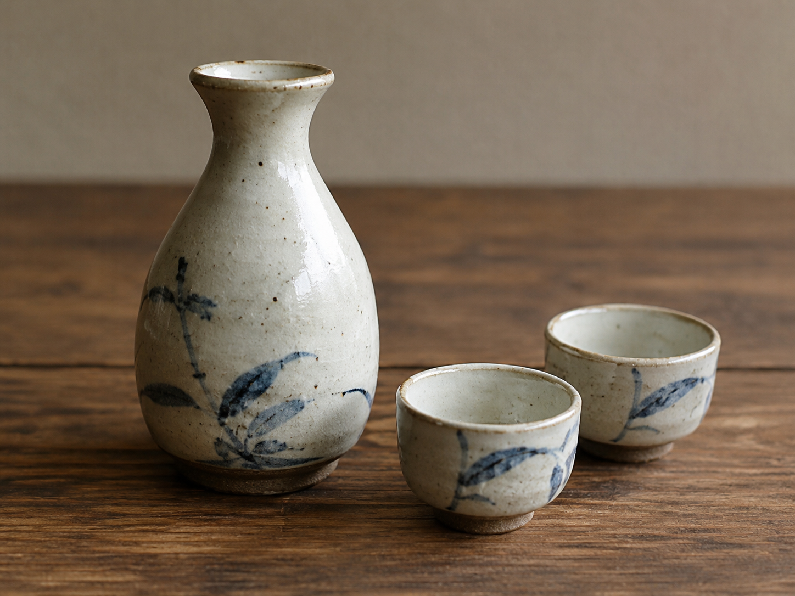
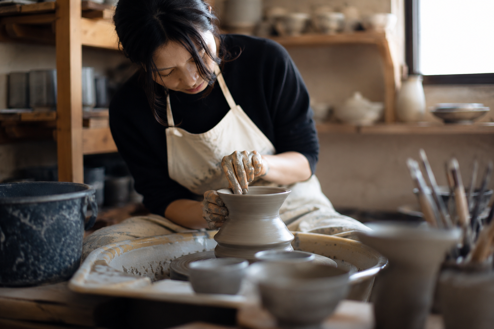

個展「秋のうつわ展」
札幌市内ギャラリーにて開催予定。

Concept
土に触れ、轆轤を回し、火をくぐる。 ひとつひとつの器には、手の跡と時間の痕跡が残ります。
茶の湯のための茶碗から、日々の食卓に寄り添う器まで。 静かな佇まいの中に、土の表情を映しています。
Works






Artist
北海道在住。自然や季節の移ろいに触れながら、 日々の手仕事として器を制作しています。
土の荒さ、釉薬の流れ、焼成による偶然の景色。 使う人の暮らしの中で、静かに馴染む器を目指しています。
Exhibition
札幌市内ギャラリーにて開催予定。
日々の食卓に寄り添う器を中心に出品します。
茶碗、花器、小皿などを展示予定。